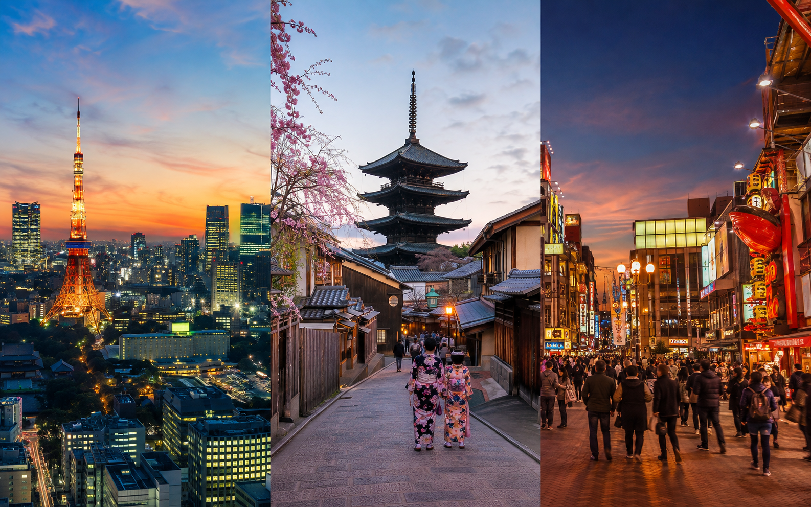
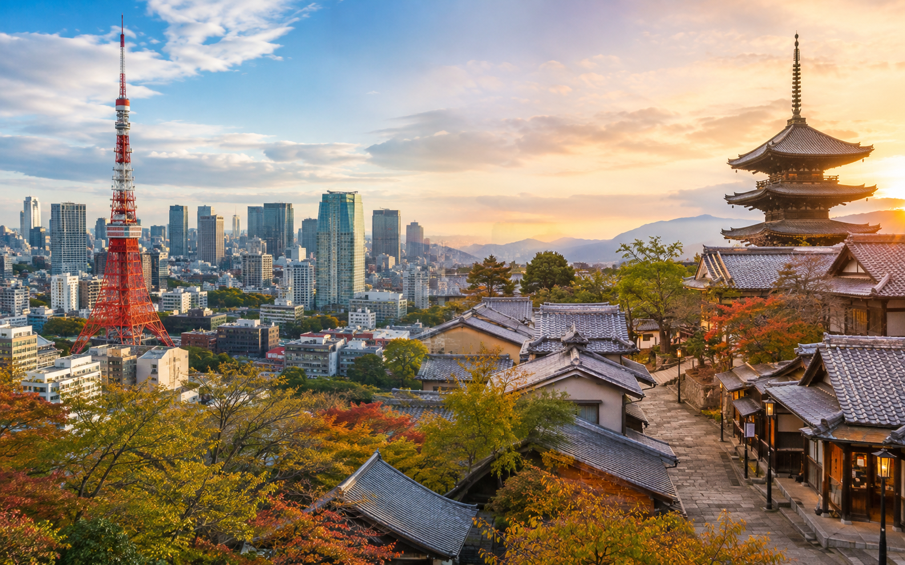
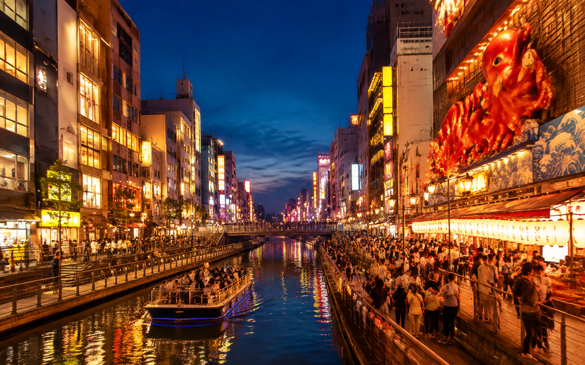

Tokyo, Kyoto and Osaka Itinerary: How to Divide Your Days
Tokyo, Kyoto, and Osaka are the three cities many first-time visitors want to combine in Japan. The difficult part is usually not deciding whether to visit them. It is deciding how many days to give each city without making one part of the trip feel rushed and another unnecessarily long.
I would not divide the trip equally by default. Tokyo is much larger and usually deserves the most time. Kyoto needs enough full days because its major sights are spread across different areas. Osaka can be a shorter stay, a longer food-and-nightlife stop, or even a day trip from Kyoto on a short itinerary.
The right split depends on your total trip length, arrival and departure airports, interests, and whether you plan any day trips. This guide focuses only on that decision. For complete daily routes, use the separate 7-, 10-, 14-, or 21-day Japan itineraries.
The Best Tokyo, Kyoto and Osaka Day Split

For most first-time visitors, I would start with this rule:
Tokyo: about 40% to 45% of your city time
Kyoto: about 30% to 35%
Osaka: about 20% to 30%
That does not mean every trip should follow exact percentages.
It simply reflects how much useful time each city usually needs.
Here is a practical starting point:
| Trip Length | Tokyo | Kyoto | Osaka | My Recommendation |
|---|---|---|---|---|
| 7 days | 3 days | 3 days | Day trip or short visit | Do not force three hotel bases |
| 10 days | 4 days | 3 days | 2–3 days | Best balanced three-city split |
| 14 days focused on these cities | 5 days | 4 days | 4 days | Relaxed, with room for day trips |
| 14 days across more of Japan | 4 days | 4 days | 3 days | Use remaining time for another region |
Arrival and departure days may not be full sightseeing days, so count usable time as well as nights.
Do Tokyo, Kyoto and Osaka Need Equal Time?
No.
A simple:
3 days Tokyo + 3 days Kyoto + 3 days Osaka
can work, but equal numbers do not automatically create the best trip.
The three cities are very different in scale and sightseeing style.
Tokyo can easily fill several days because its major neighborhoods feel almost like separate destinations.
Kyoto needs time because its temples, shrines, historic streets, and scenic areas are spread around the city.
Osaka has plenty to do, but many first-time visitors can experience its main highlights in less time than Tokyo or Kyoto.
So I would allocate days based on what each city needs rather than trying to make the numbers look even.
Which City Deserves the Most Days?
For most first-time visitors:
Tokyo should get the most days.
Then:
Kyoto should usually get the second-largest share.
Osaka usually comes third.
There are exceptions.
If you care deeply about temples, traditional streets, gardens, and slower cultural sightseeing, Kyoto may deserve as many days as Tokyo.
If food, nightlife, shopping, and Universal Studios Japan are major priorities, Osaka may deserve more time.
But for a general first trip, I would start with:
Tokyo > Kyoto > Osaka
and adjust from there.
How Many Days Do You Need in Tokyo?
For most first-time visitors, I recommend 3 to 5 days in Tokyo.
Three days gives you a strong introduction.
Four days is more comfortable.
Five days gives you room for deeper exploration or a day trip.
3 Days in Tokyo
Three days works if your Japan trip is short.
You can divide the city broadly into areas such as:
- ✓Eastern Tokyo
- ✓Western Tokyo
- ✓Central or interest-based Tokyo
You will still need to choose carefully.
Do not expect to see every famous neighborhood.
4 Days in Tokyo
Four days is my preferred amount for a 10- to 14-day first trip.
The extra day gives you room for:
- ✓More neighborhoods
- ✓Shopping
- ✓Museums
- ✓A booked experience
- ✓A slower pace
It also gives you some protection if jet lag affects the first day.
5 Days in Tokyo
Five days works very well on a longer trip.
You can spend four days exploring Tokyo and use one day for:
- ✓Kamakura
- ✓Nikko
- ✓Mount Fuji or Hakone
- ✓Another Tokyo day
If you prefer cities to day trips, simply keep all five days in Tokyo.
When Should You Give Tokyo Less Time?
You might reduce Tokyo if:
- ✓Traditional Japan matters much more to you
- ✓You prefer smaller cities
- ✓You dislike large urban areas
- ✓Kyoto is your main priority
- ✓Your international flight arrives late and you plan to leave Tokyo quickly
Even then, I would be careful about dropping below two full sightseeing days on a first visit.
Tokyo is too large to understand through one rushed day.
When Should You Give Tokyo More Time?
Add another Tokyo day if you care about:
- ✓Anime and gaming
- ✓Shopping
- ✓Museums
- ✓Modern architecture
- ✓Food
- ✓Nightlife
- ✓Neighborhood exploration
- ✓Theme cafes or booked experiences
- ✓Tokyo-based day trips
This is also why I would not automatically leave Tokyo after two days just to add another city.
How Many Days Do You Need in Kyoto?

For most first-time visitors, I recommend 2 to 4 full days in Kyoto.
Two days is the minimum I would use in a short itinerary.
Three days is much better.
Four days works well when Kyoto is a major reason for the trip or when you want a Nara day trip from the same hotel base.
2 Days in Kyoto
Two days can cover major areas if you plan carefully.
One day might focus on eastern and southern Kyoto.
Another can focus on Arashiyama or another part of the city.
The problem is pace.
Two days does not leave much room for bad weather, crowds, or slower walking.
3 Days in Kyoto
Three days is my preferred starting point.
It gives you time for:
- ✓Fushimi Inari and eastern Kyoto
- ✓Arashiyama
- ✓Another Kyoto area
- ✓More relaxed evenings
You do not have to put several major temple areas into one exhausting day.
4 Days in Kyoto
Four days works especially well on a 14-day or longer trip.
You can use the extra time for:
- ✓Another Kyoto sightseeing day
- ✓Nara
- ✓Uji
- ✓Gardens
- ✓Shopping
- ✓A slower cultural day
This is one reason Kyoto often works well as a base rather than moving hotels for every nearby destination.
Why Kyoto Can Feel More Rushed Than Tokyo
Tokyo has an enormous number of sights, but its rail network makes many major areas straightforward to connect.
Kyoto planning can feel different.
Important sights are spread across:
- ✓Eastern Kyoto
- ✓Southern Kyoto
- ✓Western Kyoto
- ✓Northern Kyoto
- ✓Central Kyoto
Some areas involve more walking, buses, hills, and slower connections.
That means three attractions in Kyoto can sometimes take more energy than three stops in Tokyo.
I would therefore avoid cutting Kyoto simply because the city looks smaller on a map.
How Many Days Do You Need in Osaka?

For most first-time visitors, I recommend 1 to 3 days in Osaka.
The correct number depends strongly on your interests.
1 Day in Osaka
One full day can give you a good introduction.
You can focus on:
- ✓One main daytime area
- ✓Namba or Shinsaibashi
- ✓Dotonbori in the evening
- ✓Food and nightlife
This works especially well on a short Japan trip.
2 Days in Osaka
Two days is my preferred amount in a balanced 10-day itinerary.
You have time for the main city highlights without rushing through every neighborhood.
The second day can also make room for deeper food exploration or a major attraction.
3 Days in Osaka
Three days makes sense if you want:
- ✓Universal Studios Japan
- ✓More food exploration
- ✓Shopping
- ✓Nightlife
- ✓Slower mornings
- ✓More neighborhoods
A theme park day should usually be treated as its own full day rather than counted as a normal Osaka sightseeing day.
Can You Visit Osaka as a Day Trip From Kyoto?
Yes.
This is one of the most useful choices for travelers with limited time.
Kyoto and Osaka are close enough that you do not always need separate hotels.
For a 7-day first trip, I often prefer:
Tokyo + Kyoto as hotel bases
with Osaka as an optional day or evening visit.
That avoids another:
- ✓Check-out
- ✓Luggage move
- ✓Hotel search
- ✓Check-in
On a longer trip, however, staying in Osaka becomes more useful, especially if you are flying home from Kansai International Airport.
When Is Osaka Worth an Overnight Stay?
I would stay overnight if:
- ✓You want nightlife
- ✓Food is a major priority
- ✓You want more than one Osaka day
- ✓You plan Universal Studios Japan
- ✓Your international flight leaves from Kansai
- ✓You prefer Osaka's evening atmosphere
- ✓You want to reduce late-night travel back to Kyoto
If none of those matter much and the trip is short, Osaka can remain a day trip.
The Biggest Day-Splitting Mistake
The most common mistake is asking:
“How can I give every city the same number of days?”
A better question is:
“What do I actually want to do in each city?”
If Tokyo has twelve things you care about, Kyoto has eight, and Osaka has four, dividing the trip equally makes little sense.
Your interests should decide the final split.
The next step is to apply these rules to 7-, 10-, and 14-day trips, because the best Tokyo-Kyoto-Osaka balance changes significantly as more days become available.
How to Divide 7 Days Between Tokyo, Kyoto and Osaka
Seven days is where you need to be most selective.
I would not recommend using three separate hotel bases unless there is a strong reason.
A better split is:
Tokyo: 3 days
Kyoto: 3 days
Osaka: day trip, evening visit, or departure stop
This keeps the route simple.
You avoid spending too much of a short trip on:
- ✓Packing
- ✓Hotel changes
- ✓Station transfers
- ✓Luggage
- ✓Check-in and check-out
Best 7-Day Setup
Use:
Tokyo → Kyoto
Then choose one of these for Osaka:
- ✓Day trip from Kyoto
- ✓Evening visit
- ✓Final-night stay if it helps with a Kansai Airport departure
This is the same logic used in our Japan 7-Day Itinerary for First-Time Visitors ↗.
Should You Split 7 Days as 3-2-2?
You can, but I would not make it the default.
A split of:
3 days Tokyo
2 days Kyoto
2 days Osaka
gives Osaka more time, but it makes Kyoto fairly tight.
For most first-time visitors, I would rather give Kyoto the extra day.
The 3-2-2 split makes more sense if:
- ✓Food and nightlife matter a lot
- ✓You want Universal Studios Japan
- ✓Temples are a lower priority
- ✓You prefer modern cities
- ✓You are departing from Osaka
How to Divide 10 Days Between Tokyo, Kyoto and Osaka
Ten days is where all three cities fit much more naturally.
My preferred split is:
Tokyo: 4 days
Kyoto: 3 days
Osaka: 2 days
The remaining time is used by arrival, transfer, departure, or one carefully chosen side trip.
This is one of the most balanced first-trip structures.
Why 4 Days in Tokyo Works
Tokyo benefits from the extra day because the city is large and very different from one area to another.
Four days gives you room for:
- ✓Eastern Tokyo
- ✓Western Tokyo
- ✓Central Tokyo
- ✓One interest-based day
You can still leave with places unseen, but the visit feels much less compressed.
Why 3 Days in Kyoto Works
Three days gives Kyoto enough room for different geographic areas.
For example:
- ✓Eastern and southern Kyoto
- ✓Arashiyama
- ✓Another Kyoto area
You do not need to cross the city several times each day.
Why 2 Days in Osaka Works
Two days gives Osaka enough time for a proper stay.
You can use:
Day 1: arrival, Namba, Shinsaibashi, Dotonbori
Day 2: full Osaka sightseeing
That is a much stronger experience than trying to see Osaka in two or three rushed hours.
What About Nara on a 10-Day Trip?
Nara should come from the flexible portion of the trip rather than taking a full day away from all three cities.
One useful structure is:
Tokyo → Kyoto → Nara → Osaka
with Nara fitting between Kyoto and Osaka.
That lets you see Nara without creating another hotel base.
How to Divide 14 Days Between Tokyo, Kyoto and Osaka
There are two very different ways to use 14 days.
This is important.
Option 1: Focus Mainly on the Three Cities
If your trip is mostly about Tokyo, Kyoto, and Osaka, I would use roughly:
Tokyo: 5 days
Kyoto: 4 days
Osaka: 4 days
The remaining time is absorbed by arrival, departure, or transfers.
This gives you a much slower trip.
It also creates room for nearby day trips.
Option 2: Use 14 Days to See More of Japan
This is the option I prefer for many first-time visitors.
Use roughly:
Tokyo: 4 days
Kyoto: 4 days
Osaka: 3 days
Then use the remaining days for another destination.
For example:
- ✓Hiroshima
- ✓Miyajima
- ✓Nara
- ✓Another carefully selected extension
This is closer to the structure of our Japan 14-Day Itinerary for First-Time Visitors ↗.
Which 14-Day Split Is Better?
Choose the three-city-focused route if you want:
- ✓Slower mornings
- ✓More shopping
- ✓More food
- ✓More neighborhood exploration
- ✓Several city-based day trips
- ✓Less long-distance travel
Choose the broader route if you want:
- ✓More variety
- ✓Another region
- ✓Hiroshima
- ✓Miyajima
- ✓A wider first look at Japan
There is no need to add another destination simply because you have two weeks.
But two weeks gives you enough time to do so without damaging the three-city experience.
What If You Have 8 Days?
For eight days, I would use something close to:
Tokyo: 3 days
Kyoto: 3 days
Osaka: 1 day
with the remaining time used for transfers and departure.
I would still consider keeping only Tokyo and Kyoto as hotel bases if you want a simpler trip.
Osaka can be visited from Kyoto.
What If You Have 9 Days?
Nine days makes a short Osaka stay more reasonable.
A good starting split is:
Tokyo: 4 days
Kyoto: 3 days
Osaka: 1–2 days
This depends on arrival and departure times.
If your first day in Tokyo is mostly lost to travel, keep more Tokyo time.
What If You Have 11 or 12 Days?
Once you move beyond ten days, you have two choices.
Add More Time to the Three Cities
You could use:
Tokyo: 4–5 days
Kyoto: 3–4 days
Osaka: 2–3 days
This works well for a slower trip.
Add One More Destination
You can keep the core split close to:
4 Tokyo + 3 Kyoto + 2 Osaka
and use the remaining time elsewhere.
This is often better than adding extra days to each city without a clear reason.
Should Tokyo or Kyoto Get the Extra Day?
This is one of the most common decisions.
If you have one spare day and cannot decide where to put it, use your interests.
Give It to Tokyo If You Prefer:
- ✓Modern city life
- ✓Shopping
- ✓Food
- ✓Anime and gaming
- ✓Museums
- ✓Nightlife
- ✓Observation decks
- ✓Neighborhood exploration
Give It to Kyoto If You Prefer:
- ✓Temples
- ✓Shrines
- ✓Gardens
- ✓Historic streets
- ✓Traditional architecture
- ✓Slower sightseeing
- ✓Cultural sites
For a general first trip, I would usually give the extra day to Tokyo if your Kyoto plan already has three full days.
Should Kyoto or Osaka Get the Extra Day?
This decision is often harder.
Give It to Kyoto If You Want:
- ✓More historic sightseeing
- ✓More temples
- ✓Arashiyama
- ✓A Nara day trip from the same hotel
- ✓A slower cultural pace
Give It to Osaka If You Want:
- ✓More food
- ✓Nightlife
- ✓Shopping
- ✓Universal Studios Japan
- ✓A later departure from Kansai Airport
If you are unsure, I would usually favor Kyoto for sightseeing depth.
Osaka becomes the better choice when food, nightlife, or a theme park is one of your main priorities.
Should You Stay in Kyoto or Osaka Longer?
This depends on what you want from the evenings.
Kyoto evenings can be quieter.
Osaka usually feels more active later into the night.
So even if your sightseeing priorities favor Kyoto, you may still prefer more Osaka nights if you care about:
- ✓Nightlife
- ✓Late meals
- ✓Shopping
- ✓Busy city streets
This is why nights and sightseeing days do not always need to be divided in exactly the same way.
Can You Stay in One City and Visit the Other?
Yes.
Kyoto and Osaka are close enough that some travelers prefer one base.
Stay in Kyoto and Visit Osaka If:
- ✓Kyoto is your main priority
- ✓You only need one Osaka day
- ✓You dislike hotel changes
- ✓You want historic surroundings
Stay in Osaka and Visit Kyoto If:
- ✓Nightlife matters more
- ✓You prefer a larger city base
- ✓You want better access to Kansai Airport
- ✓You have several Osaka-focused plans
For a first visit, I still prefer sleeping in Kyoto for at least part of the trip if Kyoto is a major destination.
Is Osaka Worth Skipping?
Yes, in some short itineraries.
That does not mean Osaka is not worth visiting.
It simply means that in a very short first trip, Tokyo and Kyoto usually give stronger contrast:
Tokyo: huge modern capital
Kyoto: historic and cultural center
If you only have five or six usable sightseeing days, Osaka may be the city I would cut first.
Once you reach around nine or ten days, Osaka becomes much easier to include properly.
Is Kyoto Worth Skipping?
For most first-time visitors, I would not skip Kyoto.
If your trip is focused entirely on modern cities, nightlife, theme parks, or specific interests, you may choose differently.
But for a general first visit, Kyoto adds a side of Japan that Tokyo and Osaka do not replace.
Is Tokyo Worth Skipping?
Again, not for the average first-time visitor.
Tokyo is often the easiest international arrival point and has enough variety to justify several days.
You might skip it on a future regional trip, but for a first Japan trip, I would normally keep it.
How Arrival Day Changes Your Split
Do not count a late international arrival as a normal Tokyo sightseeing day.
If you land in the afternoon or evening, that day may only include:
- ✓Airport transfer
- ✓Hotel check-in
- ✓Dinner
- ✓A short walk
So a plan that says “3 days Tokyo” may actually give you only two full sightseeing days.
Always count usable days, not just hotel nights.
How Departure Day Changes Your Split
The same rule applies at the end.
An early flight from Kansai Airport may make your final Osaka day almost unusable.
A late flight may give you most of the morning and part of the afternoon.
Check your actual flight before deciding that you have “two full Osaka days.”
Why Open-Jaw Flights Can Improve the Split
One of the cleanest ways to combine these cities is:
Fly into Tokyo
then
Fly home from Osaka/Kansai
This avoids using a day to return to Tokyo at the end.
For a short trip, that saved time can make a noticeable difference.
For a longer trip, it can make the whole route easier.
If airfare is much cheaper for a Tokyo round trip, compare the savings with the cost and time of returning east before deciding.
Best Day Split by Travel Style
The numbers should change based on what you actually enjoy.
A first-time visitor interested in temples should not use the same split as someone visiting mainly for food, shopping, and nightlife.
If You Love Culture and History
I would favor Kyoto.
A useful split for a 10-day trip could be:
Tokyo: 3 days
Kyoto: 4 days
Osaka: 2 days
Use the remaining time for arrival, transfer, or departure.
This gives you more room for:
- ✓Historic districts
- ✓Temples
- ✓Shrines
- ✓Gardens
- ✓Nara
- ✓Slower walking days
If You Love Food and Nightlife
Give Osaka more time.
For example:
Tokyo: 4 days
Kyoto: 2–3 days
Osaka: 3 days
This works especially well if you want to spend several evenings in Osaka rather than commuting back to Kyoto.
If You Love Shopping
Tokyo deserves the largest share.
A possible split is:
Tokyo: 5 days
Kyoto: 2–3 days
Osaka: 2 days
Tokyo has enough major shopping areas that extra city time can disappear very quickly.
Osaka can then add another shopping and food experience near the end.
If You Love Anime and Gaming
Again, Tokyo should usually get more time.
Give yourself enough room for interest-based neighborhoods rather than squeezing them into one evening after sightseeing.
A 10-day split might look like:
Tokyo: 5 days
Kyoto: 3 days
Osaka: 1–2 days
If You Want Universal Studios Japan
Give Osaka at least one additional full day.
Do not count the theme park day as your main Osaka sightseeing day.
For example, a 10-day trip might become:
Tokyo: 4 days
Kyoto: 3 days
Osaka: 3 days
with one Osaka day largely reserved for Universal Studios Japan.
If You Prefer a Slower Trip
Reduce the number of transfers before reducing sightseeing time.
Instead of sleeping in all three cities during a short trip, use:
Tokyo + Kyoto
as the two main hotel bases.
Visit Osaka from Kyoto if you want to see it.
That gives you fewer:
- ✓Check-outs
- ✓Check-ins
- ✓Luggage moves
- ✓Station transfers
A slower trip does not mean seeing less value. It means spending less time managing logistics.
How Day Trips Affect the Split
Day trips count as real travel days.
Do not treat them as free additions.
If you stay four nights in Tokyo but spend one full day in Hakone, you effectively have fewer Tokyo sightseeing days.
The same applies to:
- ✓Kamakura from Tokyo
- ✓Nikko from Tokyo
- ✓Nara from Kyoto
- ✓Uji from Kyoto
- ✓Himeji from Osaka
Always decide whether your number represents hotel nights or actual city days.
They are not the same thing.
Tokyo Day Trips: Which City Loses the Time?
If you want a Tokyo-based day trip, I would usually add an extra Tokyo night rather than reduce Kyoto or Osaka automatically.
For example:
Instead of:
3 Tokyo + 3 Kyoto + 2 Osaka
use:
4 Tokyo + 3 Kyoto + 2 Osaka
if one Tokyo day is going to Hakone or Kamakura.
Otherwise your Tokyo visit may end up much shorter than expected.
Nara: Should It Come From Kyoto or Osaka Time?
For most first-time trips, I would treat Nara as part of your Kyoto-region allocation.
Kyoto makes a natural base for it.
If you give the region four days, that could mean:
3 Kyoto sightseeing days + 1 Nara day
rather than four complete Kyoto days.
This is important when comparing itineraries.
Someone saying “four days in Kyoto” may actually mean three days in Kyoto plus a Nara day trip.
Himeji: Should It Come From Osaka Time?
Usually, yes.
If you stay three or four nights in Osaka, one of those days can become a Himeji day trip.
But if Osaka only has one full day, I would not automatically spend it somewhere else.
See Osaka properly first.
Should You Use Kyoto or Osaka as Your Kansai Base?
If you want only one hotel base in the Kansai region, this becomes an important choice.
Choose Kyoto as Your Base If:
- ✓Kyoto is the main priority
- ✓You want early temple visits
- ✓You want Nara as a day trip
- ✓Historic atmosphere matters
- ✓You prefer quieter evenings
Choose Osaka as Your Base If:
- ✓Food is a major priority
- ✓Nightlife matters
- ✓You want Universal Studios Japan
- ✓Kansai Airport access matters more
- ✓You prefer a larger modern city
My Preference for First-Time Visitors
If you have enough nights, I prefer staying in both cities.
For example:
3 Kyoto nights + 2 Osaka nights
is more useful than forcing five nights into one base when both cities matter to you.
But on a seven-day trip, reducing hotel changes becomes more important.
That is why the correct answer changes with trip length.
Should You Travel Tokyo → Kyoto → Osaka?
For most first-time visitors, yes.
This is the cleanest direction if you arrive in Tokyo and depart from Kansai.
The route becomes:
Tokyo → Kyoto → Osaka
without backtracking.
If Nara is included, place it around the Kyoto portion.
If Hiroshima is included on a longer trip, continue west before returning to Osaka or use Osaka as the final base depending on your route.
Should You Visit Osaka Before Kyoto?
You can.
This can make sense if:
- ✓Your hotel availability is better
- ✓An event falls on specific dates
- ✓You are arriving through Kansai Airport
- ✓Your return flight leaves from Tokyo
- ✓Your route moves east instead of west
There is no rule that Kyoto must always come before Osaka.
The better order is the one that reduces backtracking.
What If You Arrive in Osaka Instead of Tokyo?
Reverse the logic.
A trip can work as:
Osaka → Kyoto → Tokyo
especially if you fly into Kansai and home from Tokyo.
Do not travel across Japan just to follow the order used in someone else's itinerary.
Use your actual airports.
Tokyo vs Kyoto: Which Needs More Time?
For a general first trip, I usually give Tokyo slightly more time.
For example:
4 Tokyo + 3 Kyoto
rather than:
3 Tokyo + 4 Kyoto
But I would reverse that if:
- ✓Temples are a major interest
- ✓Traditional architecture matters more
- ✓You want Nara
- ✓You prefer a slower cultural trip
The better answer depends on interests, not city size alone.
Kyoto vs Osaka: Which Needs More Time?
For general sightseeing, I usually give Kyoto more time.
For example:
3 Kyoto + 2 Osaka
works well.
I would give Osaka equal or more time if:
- ✓Universal Studios is included
- ✓Food is a major focus
- ✓You want nightlife
- ✓You prefer modern cities
- ✓You are using Osaka for nearby day trips
Tokyo vs Osaka: Which Needs More Time?
Tokyo usually deserves more.
Both are large modern cities, but Tokyo has a much wider range of major neighborhoods and first-time attractions.
A common balanced split is:
4 Tokyo + 2 Osaka
before adjusting for Kyoto.
The Best Split If This Is Your Only Japan Trip
If you expect this may be your only visit for a long time, do not cut one city too heavily just to add more destinations.
For around 10 days, I like:
4 Tokyo + 3 Kyoto + 2 Osaka
For around 14 days focused mainly on these cities:
5 Tokyo + 4 Kyoto + 4 Osaka
with room for one or two day trips depending on flight times.
This gives each city enough time to feel distinct.
The Best Split If You Expect to Return to Japan
You can be more selective.
For example, on the first trip you could focus on:
Tokyo + Kyoto
and save deeper Osaka travel for another visit.
Or prioritize:
Tokyo + Osaka
if Kyoto does not match your interests.
There is no requirement to complete all three cities on one trip.
Common Mistakes When Dividing Your Days
Counting Arrival Day as a Full Day
An evening arrival does not equal eight hours of sightseeing.
Counting Departure Day as a Full Day
Airport travel can remove most of it.
Giving Every City Equal Time
Different cities need different amounts of time.
Forgetting Day Trips
A Nara day means one less full Kyoto day.
Booking Three Hotels for a Very Short Trip
The hotel changes may take more time than the third base saves.
Giving Kyoto Too Little Time
Its sights are spread across several areas.
Giving Osaka Too Little Time After Choosing to Stay There
If you move hotels to Osaka, make the move worthwhile.
Adding Universal Studios Without Adding a Day
A theme park day changes the Osaka allocation.
Returning to Tokyo Without Accounting for the Travel
This can remove a large part of the final day.
Simple Rules for Choosing Your Final Split
If you are still unsure, use these rules:
- ✓Give Tokyo at least 3 useful days on a normal first visit.
- ✓Give Kyoto at least 2 full sightseeing days.
- ✓Give Osaka 1–2 days unless it is a major priority.
- ✓Add another Tokyo day for a Tokyo-based day trip.
- ✓Add another Kyoto-region day for Nara.
- ✓Add another Osaka day for Universal Studios.
- ✓Avoid three hotel bases if your total trip is very short.
- ✓Count usable sightseeing days, not only nights.
- ✓Let your arrival and departure airports shape the route.
- ✓Do not divide days equally just because it looks neat.
Quick Day-Split Recommendations
| Your Priority | Tokyo | Kyoto | Osaka |
|---|---|---|---|
| Balanced first trip | Most | Second most | Shorter |
| Culture and history | Medium | Most | Shorter |
| Food and nightlife | Most/Medium | Medium | More |
| Anime and shopping | Most | Medium | Shorter |
| Universal Studios | Most | Medium | Add 1 day |
| Slow travel | Longer stays | Longer stays | Day trip if short |
| Short 7-day trip | 3 days | 3 days | Optional |
| 10-day trip | 4 days | 3 days | 2 days |
| Longer 14-day trip | 4–5 days | 4 days | 3–4 days |
Frequently Asked Questions
For a first trip, a useful starting point is 4 days in Tokyo, 3 days in Kyoto, and 2 days in Osaka for a 10-day trip, with remaining time used for transfers or arrival and departure.
Tokyo usually needs the most because of its size and number of distinct neighborhoods.
Yes, for a short first visit. Four days is more comfortable.
Two full days can work, but three is better for most first-time visitors.
One day can cover a useful introduction. Stay longer if food, nightlife, shopping, or Universal Studios are major priorities.
For a short trip, it can be. This reduces hotel changes.
Stay in Kyoto if historic sightseeing is the priority. Stay in Osaka if nightlife, food, airport access, or Universal Studios matter more.
Yes, but I would usually keep Tokyo and Kyoto as the main hotel bases and make Osaka a day trip or short visit.
A strong starting split is 4 days Tokyo, 3 days Kyoto, and 2 days Osaka, with the remaining time covering transfers or a side trip.
For a three-city-focused trip, around 5 days Tokyo, 4 days Kyoto, and 4 days Osaka works well. If you want more of Japan, reduce the city time and add another region.
Give it to Tokyo for shopping, neighborhoods, food, museums, or modern attractions. Give it to Kyoto for temples, gardens, Nara, and traditional sightseeing.
Not always. Short trips can use one Kansai base, while longer trips usually benefit from staying in both.
Final Thoughts
There is no perfect Tokyo, Kyoto, and Osaka split for every traveler. For most first-time visitors, Tokyo deserves the most time, Kyoto should get enough full days to avoid rushing between historic areas, and Osaka can be shorter unless food, nightlife, Universal Studios, or Kansai day trips are major priorities. Start with your total usable days, subtract arrival, departure, transfers, and day trips, then divide what remains based on what you actually want to experience.